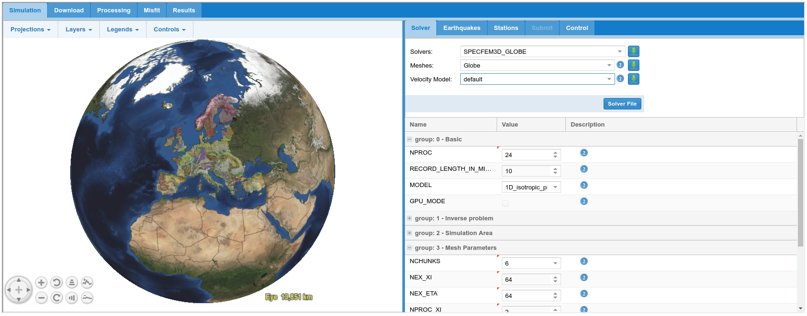
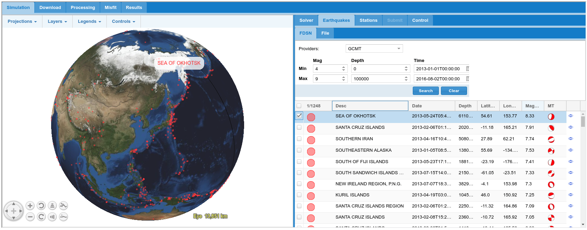
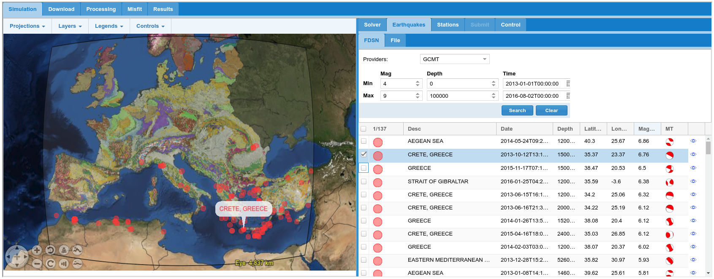
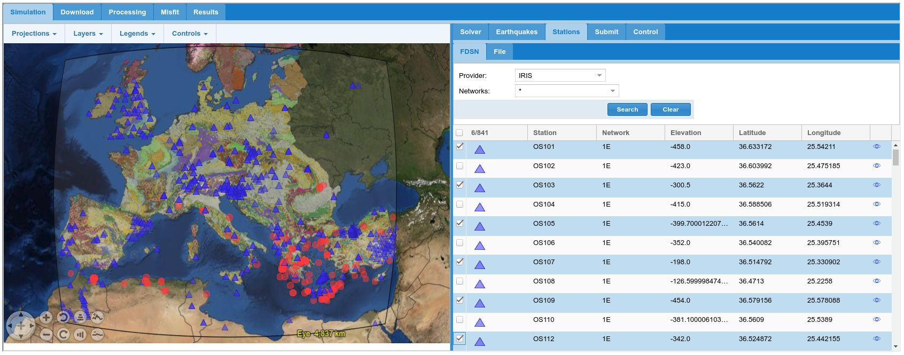
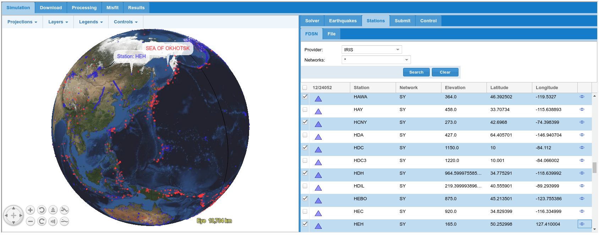

6. A SPECFEM3D_GLOBE simulation example¶
6.1 Introduction¶
SPECFEM3D_GLOBE is a spectral element code for simulating the seismic wave-field on regional and global scales. As the solver accounts for the curvature of the Earth is much better for large scale simulations. Unlike SPECFEM3D_Cartesian, SPECFEM3D_GLOBE does not require a pre-made mesh. Instead the mesh is produced for the simulation area by an inbuilt meshing tool.
For global waveform simulations (i.e. simulations where the whole earth is simulated) the user only defines the grid spacing for the whole earth mesh. For regional simulations (where a segment of the globe is simulated) the user defines the area to be modelled and the grid spacing for that bespoke mesh. The mesh is then calculated before the simulation is run.
6.2 Setting the simulation area¶
Once the user has selected the SPECFEM3D_GLOBE solver from the drop down ‘solvers’ menu in the ‘Solver’ tab the user will have the option to select from two mesh types. The first of these is ‘Globe’, to run a global simulation. The second of these is ‘Bespoke’, which allows a user defined area to be modelled.
6.2.1 Global Simulation¶
If you select global simulation, then you are modelling the whole globe. Therefore, all earthquakes and all seismic stations will be available for modelling. The user can define the length of the simulation (by varying the RECORD_LENGTH parameter) and the resolution of the simulation (by varying the mesh parameters) as described in section 6.4. The ‘velocity model’ must then be set to default.
6.2.2 Regional Simulation¶
If you select a ‘Bespoke’ mesh you are able to define the specific region you wish to simulate. This is defined by setting the centre of the area to be modelled with the parameters ‘CENTRE_LONGITUDE_IN_DEGREES’ and ‘CENTRE_LATITUDE_IN_DEGREES’. The width and height of the area to be simulated are then defined by the ‘ANGULAR_WIDTH_XI_IN_DEGREES’ and ‘ANGULAR_WIDTH_ETA_IN_DEGREES’ which describe the width of the region at the closest point to the equator, and the height of the region in degrees of longitude and latitude respectively. The approximate area to be simulated is shown on the map to the left, allowing the area to be refined and appropriate earthquakes and seismic stations to be selected for simulation.

Figure 6.1: Example model setup for a global waveform simulation
Figure 6.2: Example of regional simulation for Southern European and Mediterranean region.
6.3 Selecting a velocity model¶
For both regional and global simulations a range of global 1D and 3D velocity models can be used. These velocity models are defined within SPECFEM3D_GLOBE, and so are not defined in the ‘Velocity Model’ tab. Instead the models are defined in the dropdown ‘MODEL’ menu in group 0 of the input parameters.
The input parameters for SPECFEM3D_GLOBE are divided into 9 groups, which are briefly described in Appendix 2.
6.4 Defining the resolution & mesh parameters¶
In SPECFEM the frequency of seismic wave that can be accurately simulated depends on both the grid spacing (DH) of the mesh of points the wave-field is calculated for, and the time step (DT). Unlike SPECFEM3D_Cartesian, (where DT is manually defined, and should be set to an appropriate value for the mesh and velocity model that are selected), SPECFEM3D_GLOBE calculates the DT that is needed, based on the grid spacing of the mesh. The user therefore defines the highest frequency (or shortest wavelength) that the setup can accurately simulate by setting the mesh parameters.
For the Global case the user must first define how many ‘chunks’ the globe should be subdivided into, the default on the platform being 6. For regional simulations the simulation area must be defined as a single chunk. The resolution of the simulation is then prescribed by the values ‘NEX_XI’ and ‘NEX_ETA’, which correspond to the number of elements at the surface of the model space for the first chunk in the side of length XI and ETA respectively. SPECFEM3D_GLOBE requires that the value of NEX_XI must be a multiple of 16, and be 8 times a multiple of NPROC_XI. In turn the value of NEX_ETA must be a multiple of 16, and be 8 times a multiple of NPROC_ETA. To summarise;
Where \((\text{NPO}C_{\text{ETA}}*c)\) and \((NPOC_{\text{XI}}*c)\) are even and greater than 2.
The shortest period resolved by the simulation can then be approximated by the following equation;
For regional simulations the areas you have defined at the Earth’s surface will be modelled. The depth of the simulation area is automatically defined, and the wave filed is simulated down to the inner core boundary in regional simulations. This means that certain seismic phases that travel through the core will not be seen. The VERCE platform automatically sets absorbing boundary conditions for simulation areas. However, as these boundary conditions are not perfect care should be taken if using receivers or in particular sources that are close to the limits of the region simulated.
Once you have defined the area you wish to model the earthquake sources and receivers can be defined in the ‘Earthquakes ’ and ‘Stations’ tabs.
6.5 Selecting an Earthquake¶
For global and regional simulations the only earthquake catalogue that is currently supported is the gCMT catalogue. Other earthquake mechanisms can be uploaded is gCMT format using the ‘file’ tab. The format needed is shown in figure 6.5.
If you are using the gCMT catalogue supported in the portal, you can search for events of certain magnitudes and dates using the search parameter boxes, and the available earthquakes are seen inside the mesh area. This is shown for global simulation (figure 6.3) and a regional simulation (figure 6.4) below. The relevant earthquake can then be selected from either the map (by clicking on the red dot) or from the list to the right.

Figure 6.3: earthquake search for a global simulation.

Figure 6.3: earthquake search for a regional simulation for Europe.
Figure 6.4: Format of a bespoke CMT solution for upload to the portal. (Image from the SPECFEM3D Globe manual).
6.6 Selecting stations¶
Stations can then be selected as for Cartesian simulations. For SPECFEM3D_GLOBE the only source of station locations that is built in is the IRIS catalogue. If you wish to add further stations, station locations can be manually uploaded in the format shown in figure 6.5.
Example station searches for a regional simulation of Europe and for a global simulation are shown in figures 6.6 and 6.7 respectively. In the global simulations particularly, it can be useful to specify the specific networks needed by specifying the network code in the ‘Networks’ drop-down box. Stations from multiple networks can be search by separating the network codes with a comma only (no space) e.g. (IU,II). If all stations are selected the station searching and data parsing will be very slow, and it is unlikely that this volume of data will be useful. So please take the time to search for useful stations carefully.
Figure 6.5: Format for manual station location upload (Image from the SPECFEM3D_GLOBE manual)

Figure 6.6: Searching for stations in a regional mesh.

Figure 6.7: Searching for stations in a global mesh.
6.7 Submitting and monitoring the simulation¶
Once the simulation has been setup, the relevant earthquake source(s) defined, and the required stations selected the simulation can be submitted to the supercomputer. The workflow is selected from the top drop-down box, with different workflows corresponding to different HPC resources. The name and description boxes allow you to document exactly what this simulation is for.
Once the model has been submitted the progress of the simulation can be monitored on the ‘results’ tab. As the processing is done on a HPC machine, the simulation may not run immediately, as these large jobs are managed in a queue system.
Figure 6.8: Submitting a job, for a regional simulation of Europe using SPECFEM3D_GLOBE.
Figure 6.9: Monitoring the progress of submitted job through the ‘results’ tab.
6.8 Outputs from regional & global simulations¶
The results of these simulations can then be accessed through the results tabs as described in the next chapter. Example outputs include waveforms (figure 6.10), a .kmz file that can be used to view the waveforms in geographical context (figure 6.11), as well as global and regional snapshots and movie animations (e.g. figure 6.12).
Figure 6.10: Waveform produced by regional simulation.
Figure 6.11: Waveforms in geographical context using KMZ file viewed in Goole Earth.
Figure 6.12: Snapshot from a regional simulation of Europe, using regional settings in SPECFEM3D Globe.